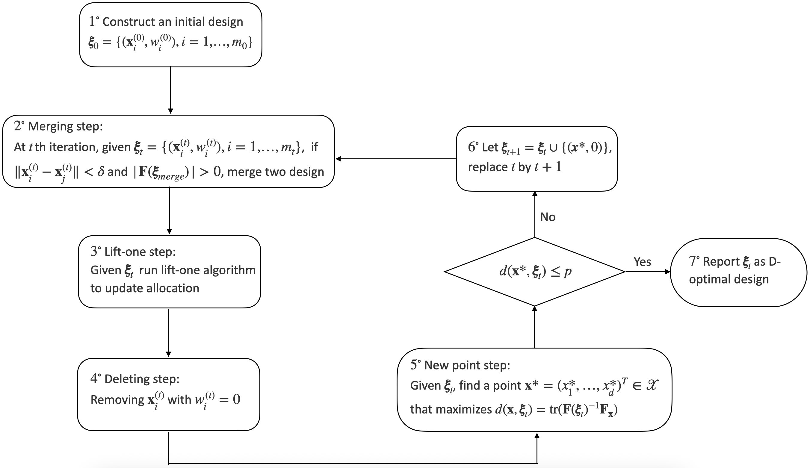
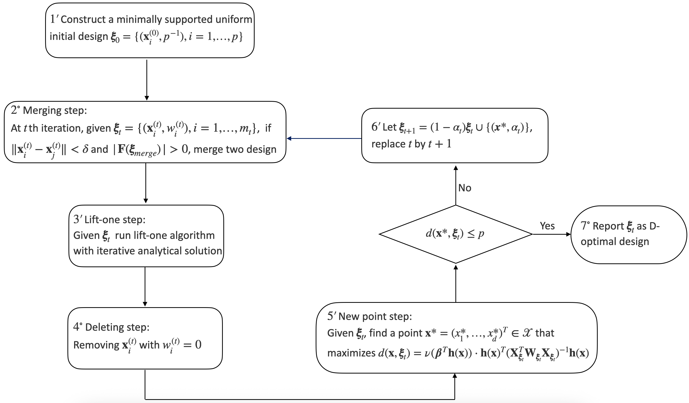
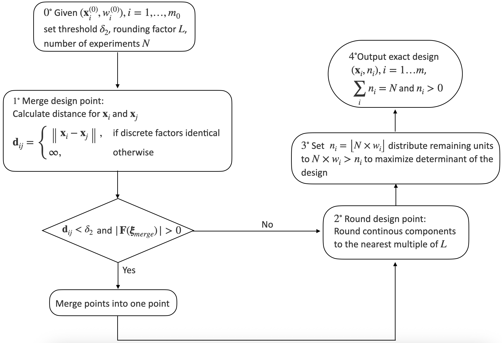
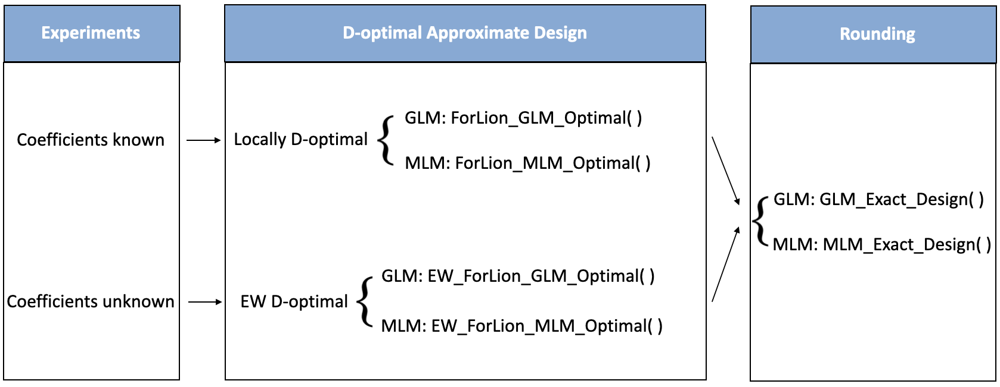

Optimal design is crucial for experimenters to maximize the information collected from experiments and estimate the model parameters most accurately. ForLion algorithms have been proposed to find D-optimal designs for experiments with mixed types of factors. In this paper, we introduce the ForLion package, which implements the ForLion algorithm to construct locally D-optimal designs and the Expected Weighted (EW) ForLion algorithm to generate robust EW D-optimal designs, which maximize the determinant of the expected Fisher information matrix under parameter uncertainty. The package supports experiments under linear models (LM), generalized linear models (GLM), and multinomial logistic models (MLM) with continuous, discrete, or mixed-type factors. It provides both optimal approximate designs and an efficient function converting approximate designs into exact designs with integer-valued allocations of experimental units. Tutorials are included to show the package’s usage across different scenarios.
The study of optimal designs can be traced back to Smith (1918) on regression problems for univariate polynomials of order up to six (Fedorov and Leonov 2014). Later in the 20th century, the optimal design theory has been expanded to encompass various statistical models and optimality criteria (Fedorov 1972; Silvey 1980; Pukelsheim 1993; Atkinson et al. 2007; Fedorov and Leonov 2014). Despite significant advancements on linear regression models, generalized linear models (GLM) for more general univariate responses (McCullagh and Nelder 1989; Dobson and Barnett 2018; Khuri et al. 2006; Stufken and Yang 2012) and multinomial logistic models (MLM) for categorical responses (Glonek and McCullagh 1995; Zocchi and Atkinson 1999; Bu et al. 2020) have been widely used in practice, but are much more difficult in the optimal design theory, because their Fisher information matrices depend on model parameters.
Package AlgDesign (version 1.2.1.2, see Wheeler and Braun (2025)) offers tools to construct optimal designs with exact and approximate allocations, focusing on linear models including polynomial forms. It allows mixed factors by generating a finite candidate list of experimental settings and employs the Fedorov’s exchange algorithm (Fedorov 1972) for optimization under D-, A-, and I-criteria. Package OptimalDesign (version 1.0.2.1, see Harman and Filová (2025); Harman et al. (2020)) finds D-, A-, I-, and c-efficient designs for linear models (LM), generalized linear models (GLM), some dose-response, and certain survival models, with mixed factors by discretizing the continuous factors first. Harman et al. (2021) further proposed a grid-exploration method for mixed-factor D-optimal designs on cuboid grids under linear, generalized linear, and nonlinear regression models. Package ICAOD (version 1.0.1, see Masoudi et al. (2020)) provides tools for finding locally, minimax, and Bayesian D-optimal designs, as well as user-specified optimality criteria, for nonlinear statistical models. It implements the imperialist competitive algorithm (Masoudi et al. 2022) for designs involving continuous factors only. Package PFIM (version 6.1, see (Mentré et al. (2024); Dumont et al. (2018)) computes D-optimal designs for nonlinear mixed-effects models (NLMEM), which is particularly useful for pharmacokinetic/pharmacodynamic models (PKPD). It handles designs either with discrete factors only or with continuous factors only. Package idefix (version 1.1.0, see (Traets et al. 2025, 2020)) is designed to generate D-efficient and Bayesian D-efficient optimal designs for multinomial logit (MNL) and mixed logit (MIXL) models for discrete choice experiments (DCE). However, these existing packages are designed for experiments with discrete factors only, continuous factors only, or mixed factors by discretizing the continuous factors first. There has been limited progress in constructing efficient designs that incorporate both discrete and continuous factors (Huang et al. 2024).
The ForLion package, available at the Comprehensive R Archive Network (CRAN, https://CRAN.R-project.org/package=ForLion), complements existing software by providing computational tools for constructing D-optimal experimental designs involving both types of factors under fairly general parametric statistical models using the ForLion algorithm proposed by Huang et al. (2024). A key contribution of the package is to provide practical computational tools for constructing D-optimal designs for experiments involving multinomial or ordinal qualitative responses under the MLM framework, while using a unified strategy for mixed-factor design problems. In addition, for GLMs and some MLMs, the package adopts internal optimizations via analytic solutions, which can significantly improve the computational efficiency (Huang et al. 2024). Different from discretizing the continuous factors first, it starts from a randomly generated or user-provided initial design and iteratively applies merging, lift-one, and deletion steps to control the number of support points. In the new-point step, it enumerates the combinations of discrete-factor levels and optimizes continuous-factor levels conditional on each discrete-factor setting. As a result, it tends to reduce the number of distinct experimental settings while maintaining high efficiency of designs. It covers linear models (LM), generalized linear models (GLM), and general multinomial logistic models (MLM). Note that the MLM here is much broader than the MNL for discrete choice experiments. It includes three more classes of models for ordinal responses, namely cumulative, adjacent-categories, and continuation-ratio logit models (Bu et al. 2020). Furthermore, to overcome the issue caused by the dependence of Fisher information matrices on model parameters, we also implement the EW ForLion algorithm proposed by Lin et al. (2026) for constructing robust optimal designs against unknown model parameters for LM, GLM, and MLM as well. Here, the EW criterion is a practical surrogate to Bayesian D-optimality under parameter uncertainty, and the resulting computation can be carried out within a similar computational framework to ForLion. The motivation and theoretical justifications of the EW criterion for mixed-factor design problems can be found in Lin et al. (2026).
In Section 2, we outline the theoretical foundations of the ForLion package, including the ForLion algorithm, the lift-one algorithm, the EW ForLion algorithm, and a rounding algorithm. In Section 3, we introduce the structure and function arguments of the ForLion package, followed by illustrative examples of the package applications, as well as the interpretations of the key results in Section 4. We summarize and conclude in Section 5.
We consider a mixed-factors experiment under a general statistical model \(M(\mathbf x; \boldsymbol \theta)\) with parameter(s) \(\boldsymbol \theta \in \boldsymbol{\Theta} \subseteq \mathbb{R}^p\) and experimental setting \({\mathbf x} \in {\cal X} \subset \mathbb{R}^d\), where \(\boldsymbol{\Theta}\) is called the parameter space, and \({\cal X}\) is called the design region or design space. For typical applications, \({\cal X}\) is compact. Among the \(d\) factors, without any loss of generality, we assume that the first \(k\) factors are continuous and the last \(d-k\) are discrete, for \(0\le k \le d\). Following Lin et al. (2026), in package ForLion, we cover three scenarios: (i) if \(k=0\), \({\cal X} = {\cal D}\) consists of a predetermined finite list of level combinations of discrete factors; (ii) if \(1\leq k\leq d-1\), \({\cal X} = \prod_{j=1}^k I_j\times {\cal D}\), with \(I_j=[a_j, b_j]\) being a finite closed interval; and (iii) if \(k=d\), \({\cal X} = \prod_{j=1}^d I_j\) .
An experimental design \(\boldsymbol{\xi}\) considered in this paper consists of \(m\) distinct design points, \(\mathbf x_1, \dots, \mathbf x_m\) \(\in {\cal X}\), and real-valued proportions \({\mathbf w} = (w_1, \ldots, w_m)^\top\) satisfying \(w_i\geq 0\) for each \(i\) and \(\sum_{i=1}^m w_i = 1\), known as an approximate allocation of the experimental units. In practice, we also look for integer-valued assignments \({\mathbf n} = (n_1, \ldots, n_m)^\top\) given \(N=\sum_{i=1}^m n_i\) , known as an exact allocation. The collection of approximate designs is denoted by \(\boldsymbol{\Xi} = \{\boldsymbol{\xi} = \{({\mathbf x}_i, w_i), i=1, \ldots, m\} \mid m\geq 1, {\mathbf x}_i \in {\cal X}, w_i\geq 0, \sum_{i=1}^m w_i = 1\}\). Under regularity conditions, the Fisher information matrix associated with the design \(\boldsymbol{\xi}\) can be denoted as \({\mathbf F}(\boldsymbol{\xi}, \boldsymbol{\theta}) = \sum_{i=1}^m w_i {\mathbf F}({\mathbf x}_i, \boldsymbol{\theta}) \in \mathbb{R}^{p\times p}\), where \({\mathbf F}({\mathbf x}_i, \boldsymbol{\theta})\) is the Fisher information associated with \({\mathbf x}_i\) .
When the experimenter has a good idea about the values of \(\boldsymbol \theta\), following Huang et al. (2024), we look for a locally D-optimal design that maximizes \(f_{\boldsymbol{\theta}}(\boldsymbol \xi)=| \mathbf F(\boldsymbol \xi, \boldsymbol \theta)|\) by implementing the ForLion algorithm (see Section 2.1). In practice, however, the experimenter may not be certain about the true parameter values. In package ForLion, we offer two options for the users. With a prespecified prior distribution or probability measure \(Q(\cdot)\) on \(\boldsymbol{\Theta}\), we look for an EW D-optimal design (Atkinson et al. 2007; Yang et al. 2016, 2017; Bu et al. 2020; Huang et al. 2025; Lin et al. 2026) that maximizes \[\begin{equation} \label{eq:f_EW} f_{\rm EW}(\boldsymbol{\xi}) = |E\{{\mathbf F}(\boldsymbol{\xi}, \boldsymbol{\Theta})\}| = \left|\int_{\boldsymbol{\Theta}} {\mathbf F}(\boldsymbol{\xi}, \boldsymbol{\theta}) Q(d\boldsymbol{\theta})\right|\ \end{equation} \tag{1}\] by implementing the EW ForLion algorithm proposed by Lin et al. (2026), also called an integral-based EW D-optimal design. When a dataset from a pilot study is available, or if the integral in (1) is difficult to calculate, we look for a sample-based EW D-optimal design (Lin et al. 2026) that maximizes \[\begin{equation} \label{eq:f_SEW} f_{\rm SEW}(\boldsymbol{\xi}) = |\hat{E}\{{\mathbf F}(\boldsymbol{\xi}, \boldsymbol{\Theta})\}| = \left|\frac{1}{B}\sum_{j=1}^B {\mathbf F}(\boldsymbol{\xi}, \hat{\boldsymbol{\theta}}_j) \right|\ , \end{equation} \tag{2}\] where \(\{\hat{\boldsymbol{\theta}}_1, \ldots, \hat{\boldsymbol{\theta}}_B\}\) are either estimated from bootstrapped samples from the pilot dataset, or sampled from the prior distribution \(Q(\cdot)\) on \(\boldsymbol{\Theta}\) (see Section 2.3).
To compare two designs, we report the relative efficiency of design \(\boldsymbol{\xi}_1\) with respect to design \(\boldsymbol{\xi}_2\) in terms of their criterion values. For local D-optimality, we define \[\mathrm{Eff}_{\mathrm{loc}}(\boldsymbol{\xi}_1;\boldsymbol{\xi}_2)=\left(\frac{|{\mathbf F}(\boldsymbol{\xi}_{\rm 1}, \boldsymbol\theta)|}{|{\mathbf F}(\boldsymbol{\xi}_{\rm 2}, \boldsymbol\theta)|}\right)^{1/p}\ ,\] where \(p\) is the number of parameters. For EW D-optimality, the relative efficiency is defined by \[\begin{array}{c@{\qquad\text{or}\qquad}c} \displaystyle \mathrm{Eff}_{\mathrm{EW}}(\boldsymbol{\xi}_1;\boldsymbol{\xi}_2) =\left(\frac{|E\{{\mathbf F}({\boldsymbol{\xi}}_{1}, \boldsymbol{\Theta})\}|} {|E\{{\mathbf F}({\boldsymbol{\xi}}_{2}, \boldsymbol{\Theta})\}|}\right)^{1/p} & \displaystyle \mathrm{Eff}_{\mathrm{SEW}}(\boldsymbol{\xi}_1;\boldsymbol{\xi}_2) =\left(\frac{|\hat{E}\{{\mathbf F}({\boldsymbol{\xi}}_{1}, \boldsymbol{\Theta})\}|} {|\hat{E}\{{\mathbf F}({\boldsymbol{\xi}}_{2}, \boldsymbol{\Theta})\}|}\right)^{1/p} \end{array}\ .\]
According to Theorem 1 of Huang et al. (2024), unlike stochastic optimization algorithms such as particle swarm optimization (PSO), the designs found by the ForLion algorithm are locally D-optimal when the converging condition based on the maximized sensitivity function is met. Based on Corollary 1 of Lin et al. (2026), the designs constructed by the EW ForLion algorithm are EW D-optimal under a similar condition, which are not only robust against unknown parameters, but also computationally much easier to find than traditional Bayesian D-optimal designs, while keeping high efficiency (Yang et al. 2016, 2017; Bu et al. 2020; Lin et al. 2026). Nevertheless, from a practical point of view, such an algorithm may stop before reaching a D-optimal design, if it fails to find the global maxima for the sensitivity function (see Remark 4 of Huang et al. (2024)). As a common practice, one may explore multiple random starting points during the maximization to increase the chance of success.
In this section, we assume that \(\boldsymbol{\theta} \in \boldsymbol{\Theta}\) is known. To simplify notations, we let \({\mathbf F}_{\mathbf x}\) and \({\mathbf F}(\boldsymbol{\xi})\) stand for \({\mathbf F}({\mathbf x}, \boldsymbol{\theta})\) and \({\mathbf F}(\boldsymbol{\xi}, \boldsymbol{\theta})\), respectively. The ForLion algorithm looks for a locally D-optimal design \(\boldsymbol{\xi}_* \in \boldsymbol{\Xi}\) that maximizes \(|{\mathbf F}(\boldsymbol\xi)|\). It begins with an initial design \(\boldsymbol{\xi}_0 \in \boldsymbol{\Xi}\) in Step \(1^\circ\) (see Figure 1) satisfying \(|{\mathbf{F}}({\boldsymbol{\xi}}_0)| > 0\), with a prespecified distance threshold \(\delta_{0} > 0\) between any two design points, such that, \(\|{\mathbf{x}}_i^{(0)} - {\mathbf{x}}_j^{(0)}\| \geq \delta_{0}\) for any \(i \neq j\). To reduce the number of distinct experimental settings, which in practice often indicates reduced experimental time and cost, at the beginning of each round of iterations, the ForLion algorithm reduces the number of design points by merging those points in close distance (i.e., less than \(\delta\)), which is performed only if the resulting design still satisfies \(|{\mathbf{F}}({\boldsymbol{\xi}}_{\rm merge})|>0\) (see Step \(2^\circ\) in Figure 1). According to Figure S2 in the Supplementary Material of Huang et al. (2024), larger \(\delta\) may yield fewer support points and increased minimum distance among support points. On the other hand, however, too large \(\delta\) may lead to unnecessary merges and possible loss in D-efficiency. In practice, one may choose an appropriate \(\delta\) to balance the number of design points and D-efficiency. In Step \(3^\circ\), the lift-one algorithm (Yang and Mandal 2015; Yang et al. 2016; Huang et al. 2025) is employed to update the approximate allocation for the current design \(\boldsymbol{\xi}_t\) . In Step \(4^\circ\), the design points with zero allocation are removed from the design.
In Step \(5^\circ\), the ForLion algorithm identifies a new design point
\(\mathbf{x}^*\) that maximizes the sensitivity function
\(d(\mathbf{x}, \boldsymbol{\xi}_t) = \operatorname{tr}(\mathbf{F}(\boldsymbol{\xi}_t)^{-1} \mathbf{F}_{\mathbf{x}})\).
When both discrete and continuous factors are present, we enumerate the
finite combinations of discrete-factor levels \(\mathbf{x}_{(2)}\) . For
each possible \(\mathbf{x}_{(2)}\) , we maximize
\(d\bigl((\mathbf{x}_{(1)},\mathbf{x}_{(2)}), \boldsymbol{\xi}_t\bigr)\)
over the continuous-factor levels \(\mathbf{x}_{(1)}\) using the L-BFGS-B
quasi-Newton method, and then select the \(\mathbf{x}_{(2)}\) that attains
the largest optimized sensitivity function value. According to Theorem
2.2 of Fedorov and Leonov (2014) and Theorem 1 in Huang et al. (2024),
if \(d(\mathbf{x}^*, \boldsymbol{\xi}_t) \leq p\), then
\(\boldsymbol{\xi}_t\) is D-optimal; otherwise, \(\mathbf{x}^*\) is added to
\(\boldsymbol{\xi}_t\) with an initial zero allocation in Step \(6^\circ\),
and the process returns to Step \(2^\circ\). In this package, we relax the
stopping rule using a prespecified level of relative tolerance
rel.tol. The algorithm stops when
\(d(\mathbf{x}^*, \boldsymbol{\xi}_t) \leq (1+\texttt{rel.tol})p\) and
reports the resulting design as a numerically D-optimal design up to the
relative tolerance. The outline of the ForLion algorithm is provided in
Figure 1, with detailed descriptions available
in Algorithm 1 of Huang et al. (2024).

To speed up the ForLion algorithm for LM and GLM, we replace Steps \(1^{\circ}\), \(3^{\circ}\), \(5^{\circ}\), and \(6^{\circ}\) in Figure 1 with Steps \(1^{\prime}\), \(3^{\prime}\), \(5^{\prime}\), and \(6^{\prime}\) in Figure 2, respectively, and implement the analytical solutions for GLM derived by Yang and Mandal (2015) and Huang et al. (2024). More specifically, in Step \(1^{\prime}\), we replace the random initial design with a minimally supported uniform design. In Step \(3^{\prime}\), we adopt the analytic solutions provided by Yang and Mandal (2015) for the lift-one algorithm (see Section 2.2) under a GLM. In Step \(5^{\prime}\), we adopt the simplified form of the sensitivity function as described in Theorem 4 of Huang et al. (2024). In Step \(6^{\prime}\), we assign an initial weight \(\alpha_t\) instead of zero to the new design point \(\mathbf{x}^*\), based on Theorem 5 of Huang et al. (2024). Those modifications accelerate the ForLion algorithm for LM and GLM. The specialized ForLion algorithm is illustrated by Figure 2, with further details provided in Section 4 of Huang et al. (2024).

The lift-one algorithm implemented in Step \(3^{\circ}\) of the ForLion algorithm was originally proposed by Yang et al. (2016) and Yang and Mandal (2015) for GLMs, and then extended for cumulative link models by Yang et al. (2017), and MLM by Bu et al. (2020). A general version and a constrained version of it can be found in Huang et al. (2025) and their Supplementary Material. It is highly efficient for finding the D-optimal approximate allocation \({\mathbf w} = (w_1, \ldots, w_m)^\top\) for a given set of design points \(\{{\mathbf x}_1, \ldots, {\mathbf x}_m\}\). By adjusting the \(i\)th weight \(w_i < 1\) while rescaling the remaining weights proportionally, the adjusted allocation is given by \[\mathbf w_i(z) = \left( \frac{1-z}{1-w_i}w_1, \dots, \frac{1-z}{1-w_i}w_{i-1}, z, \frac{1-z}{1-w_i}w_{i+1}, \dots, \frac{1-z}{1-w_i}w_m \right)^\top\] with \(z\in [0,1]\), which converts a multi-dimensional optimization problem to a one-dimensional optimization problem. The lift-one algorithm is closely related to the vertex direction method (VDM) (Wynn 1970; Fedorov 1972; Yu 2011; Fedorov and Hackl 2025), which, however, chooses the design point that maximizes the directional derivative and keeps the updated weights positive. Unlike VDM, by picking up the design points in turn, the optimal weight \(z_*\) in the lift-one algorithm can be exactly zero, allowing the ForLion algorithm to reduce the number of support points and keep the intermediate designs sparse, which can improve its computational efficiency. This weight-nullifying property can also be found in the vertex exchange method (VEM) of Böhning (1986) and the randomized exchange algorithm (REX) of Harman et al. (2020). For GLMs and MLMs with five or fewer categories, in this package we implement analytic solutions for the optimal \(z_* \in [0,1]\), which further improves the computational efficiency (Yang and Mandal 2015; Lin et al. 2026). By adjusting \({\mathbf w}_i(z)\) for each \(i=1, \dots, m\) in a random order, the converged allocation is guaranteed to be D-optimal.
The lift-one algorithm has been shown to be computationally efficient in the specific settings considered in Yang et al. (2016). In particular, the numerical comparisons in Yang et al. (2016) imply favorable computational performance of the lift-one algorithm relative to several commonly used optimization techniques, including Nelder-Mead, quasi-Newton, and simulated annealing, as well as popular design algorithms such as Fedorov-Wynn, multiplicative, and cocktail algorithms (see Huang et al. (2024) for a good review). It often achieves a design with a reduced number of support points, that is, the design points with positive weights.
In this section, the model parameter vector \(\boldsymbol{\theta} \in \boldsymbol{\Theta}\) is assumed to be unknown. Instead, either a prior distribution \(Q(\cdot)\) on \(\boldsymbol{\Theta}\) or a dataset obtained from a previous study is available.
Given a prior distribution or probability measure \(Q(\cdot)\) on
\(\boldsymbol{\Theta}\), we adopt the EW ForLion algorithm proposed by
Lin et al. (2026) to find an integral-based EW D-optimal design
\(\boldsymbol{\xi}_*\in \boldsymbol{\Xi}\) that maximizes
\(f_{\rm EW}(\boldsymbol{\xi}) = |\int_{\boldsymbol{\Theta}} {\mathbf F}(\boldsymbol{\xi}, \boldsymbol{\theta}) Q(d\boldsymbol{\theta})|\)
as defined in (1). Different from the ForLion algorithm
maximizing
\(f_{\boldsymbol{\theta}}(\boldsymbol \xi)=| \mathbf F(\boldsymbol \xi, \boldsymbol \theta)|\)
with a prespecified \(\boldsymbol{\theta}\), the EW ForLion algorithm
targets the expectation of the Fisher information matrix,
\(E\left\{ {\mathbf F}(\boldsymbol{\xi}, \boldsymbol{\Theta})\right\}\).
By computing the entry-wise expectation with respect to the prior
distribution \(Q(\cdot)\) on \(\boldsymbol{\Theta}\), we obtain a
\(p\times p\) matrix as well. Commonly used prior distributions include
uniform priors on bounded intervals, normal priors on \(\mathbb{R}\), and
Gamma priors on \((0, \infty)\) (see, e.g., Huang et al. (2025)). In this
package, we calculate the corresponding integrals by using the
hcubature() function in package
cubature (Narasimhan
et al. 2025), which applies an adaptive multidimensional integration
method by subdividing hyper-rectangular domains.
Alternatively, if a dataset from a previous or pilot study is available, we may bootstrap it for \(B\) times (e.g., \(B=1000\)). For the \(j\)th bootstrapped dataset, we fit the statistical model and obtain the parameter estimates \(\hat{\boldsymbol{\theta}}_j\) , for \(j=1, \ldots, B\). In this package, we implement the EW ForLion algorithm to find a sample-based EW D-optimal design \(\boldsymbol{\xi}_*\) , which maximizes \(f_{\rm SEW}(\boldsymbol{\xi}) = |B^{-1} \sum_{j=1}^B {\mathbf F}(\boldsymbol{\xi}, \hat{\boldsymbol{\theta}}_j)|\) as defined in (2). In practice, if the expected Fisher information matrix is difficult to calculate with respect to \(Q(\cdot)\), e.g., for some MLM (Lin et al. 2026), we may also simulate \(\hat{\boldsymbol{\theta}}_1, \ldots, \hat{\boldsymbol{\theta}}_B\) from \(Q(\cdot)\), and look for a sample-based EW D-optimal design. According to Lin et al. (2026), the resulting designs are fairly robust against different sets of parameter vectors in terms of relative efficiency.
When there is no confusion, we let \({\mathbf F}_{\mathbf x}\) represent \(\int_{\boldsymbol{\Theta}} {\mathbf F}({\mathbf x}, \boldsymbol{\theta}) Q(d\boldsymbol{\theta})\) for integral-based EW optimality, or \(B^{-1} \sum_{j=1}^B {\mathbf F}({\mathbf x}, \hat{\boldsymbol{\theta}}_j)\) for sample-based EW optimality. Similarly, we let \({\mathbf F}(\boldsymbol{\xi})\) represent \(E\{{\mathbf F}(\boldsymbol{\xi}, \boldsymbol{\Theta})\}\) for integral-based EW optimality, or \(\hat{E}\{{\mathbf F}(\boldsymbol{\xi}, \boldsymbol{\Theta})\}\) for sample-based EW optimality. Then Figure 1 may also be used for illustrating the EW ForLion algorithm, with more detailed descriptions in Algorithm 1 of Lin et al. (2026).
Both the ForLion and EW ForLion algorithms are able to find optimal experimental settings in a continuous or mixed design region. In practice, the suggested experimental settings may need to be rounded up due to the sensitivity level of the experimental device or environmental control. For example, 149.2116 Gy as the gamma radiation level may need to be rounded up to 149.2 Gy due to the sensitivity level of the radiation device (see the emergence of house flies example in Section 4.1). On the other hand, the obtained optimal approximate design may also need to be converted to an exact design given a total number \(N\) of experimental units.
In this package, we adopt the rounding algorithm proposed by Lin et al. (2026) to convert an approximate design obtained by the ForLion or EW ForLion algorithm on a continuous or mixed region to an exact design with user-specified levels of grid points and \(N\). It starts by merging design points based on a specified distance measure and a merging threshold \(\delta_2\) (see Step \(1^\circ\) in Figure 3). Then the levels of the continuous factors are rounded to the nearest multiples of user-defined grid levels (see Step \(2^\circ\)). As for the approximate allocation \(w_i\) , the rounding algorithm initializes the corresponding integer allocation \(n_i = \lfloor{N \times w_i}\rfloor\), the largest integer no more than \(Nw_i\) , and then allocates the remaining experimental units one by one to maximize the objective function (see Step \(3^\circ\)). The resulting exact design is reported in Step \(4^\circ\). The outline of the rounding algorithm is displayed in Figure 3, with more details provided in Algorithm 2 of Lin et al. (2026).
Compared with optimal designs constructed directly on the same set of grid points, the design rounded from a ForLion design costs much less time, contains fewer distinct experimental settings, and maintains a high relative efficiency with respect to the ForLion design (Lin et al. 2026).

The current version (0.4.0) of the ForLion package (Huang et al. 2026) supports finding D-optimal designs for experiments under parametric models with discrete factors only, continuous factors only, or mixed factors, including linear models (LM or GLM with “identity” link), logistic models (GLM with “logit” link) and other GLMs for binary responses (GLM with “probit”, “cloglog”, “loglog”, and “cauchit” links), Poisson models (GLM with “log” link), baseline-category logit models or multiclass logistic models (MLM with “baseline” link), cumulative logit models (MLM with “cumulative” link), adjacent-categories logit models (MLM with “adjacent” link), and continuation-ratio logit models (MLM with “continuation” link). Its key functions and structure are displayed in Figure 4.

More specifically, to construct locally D-optimal designs, ForLion provides two key functions by implementing the ForLion algorithm (Huang et al. 2024):
ForLion_MLM_Optimal for finding locally D-optimal approximate
designs under an MLM.
ForLion_GLM_Optimal for finding locally D-optimal approximate
designs under a GLM, which covers LM with “identity” link as a special
case.
The specialized arguments and their descriptions for these functions are summarized in Table S1 of the Supplementary Material (Section S1).
To construct robust D-optimal designs against unknown parameter values, the ForLion package offers two key functions as well by implementing the EW ForLion algorithm (Lin et al. 2026):
EW_ForLion_MLM_Optimal for finding EW D-optimal approximate designs
under an MLM.
EW_ForLion_GLM_Optimal for finding EW D-optimal approximate designs
under a GLM.
Details about additional arguments for implementing these functions are listed in Table S2 of the Supplementary Material (Section S1).
To obtain exact designs with user-defined grid points and number of experimental units from approximate designs, the ForLion package provides the following two functions by implementing the rounding algorithm proposed by Lin et al. (2026):
MLM_Exact_Design for obtaining exact designs under an MLM.
GLM_Exact_Design for obtaining exact designs under a GLM.
A list of arguments commonly used in all the key functions is presented in Table S3 of the Supplementary Material (Section S1).
When finding robust designs under an MLM, such as a cumulative logit model, the feasible parameter space may not be rectangular (Bu et al. 2020; Lin et al. 2026), and the computation for integral-based EW D-optimality (see (1)) is much more difficult, especially with a moderate or large number \(J\) of response categories. In the ForLion package, we adopt the sample-based EW D-optimality (see (2)) for MLMs. As for GLMs, we allow users to choose integral-based or sample-based D-optimality for deriving robust approximate and exact designs (see also Section 2.3).
In this section, we demonstrate by examples how to use the ForLion package to obtain locally D-optimal approximate designs, EW D-optimal approximate designs according to integral-based or sample-based EW D-optimality, and the corresponding exact designs, under different scenarios. The package vignette also includes a fully reproducible MLM example with five continuous factors based on a minimizing surface defects experiment. Further discussions for this experiment can be found in Section S.3 in the Supplementary Material of Huang et al. (2024) for D-optimal designs, and Section S5.1 in the Supplementary Material of Lin et al. (2026) for EW D-optimal designs.
We demonstrate the implementation of the ForLion_MLM_Optimal()
function by exploring an emergence of house flies experiment. The
original experiment, described by Itepan (1995), involved \(N = 3,500\)
pupae uniformly assigned to \(m=7\) different levels of a gamma radiation
device (in Gy): \(x_i = 80, \ 100,\ 120, \ 140, \ 160, \ 180,\ 200\). The
study recorded three categorical outcomes, namely unopened,
opened but died, and opened and emerged, which clearly have an order
or structure. A continuation-ratio non-proportional odds (npo) model
with \(J=3\), as a special case of MLM, was considered in the literature
(Zocchi and Atkinson 1999; Bu et al. 2020; Ai et al. 2023):
\[\begin{eqnarray*}
\log\left(\frac{\pi_{i1}}{\pi_{i2} + \pi_{i3}}\right) &=& \beta_{11} + \beta_{12} x_i + \beta_{13} x_i^2\ ,\\
\log\left(\frac{\pi_{i2}}{\pi_{i3}}\right) &=& \beta_{21} + \beta_{22} x_i\ ,
\end{eqnarray*}\]
with parameters
\(\hat{\boldsymbol\theta} = (\hat\beta_{11}, \hat\beta_{12}, \hat\beta_{13}, \hat\beta_{21}, \hat\beta_{22})^\top = (-1.935, -0.02642, 0.0003174,-9.159,\)
\(0.06386)^\top\) fitted from the pilot study by Itepan (1995), where
\(i=1, \ldots, m\).
Following Ai et al. (2023) and Huang et al. (2024), we regard \(\hat{\boldsymbol{\theta}}\) as the true parameter values and reconsider the experiment with a continuous range for the gamma radiation levels, namely \(x_i \in \mathcal{X} = [0, 200]\). In this case, the \(J \times p\) model matrix \(\mathbf{X}_x\) (here \(p=5\)) and its derivative with respect to the continuous variable \(x\) are \[\mathbf{X}_x = \left( \begin{array}{ccccc} 1 & x & x^2 & 0 & 0 \\ 0 & 0 & 0 & 1 & x \\ 0 & 0 & 0 & 0 & 0 \end{array} \right)_{3\times 5}\ ,\>\>\> \frac{\partial \mathbf{X}_x}{\partial x} = \left( \begin{array}{ccccc} 0 & 1 & 2x & 0 & 0 \\ 0 & 0 & 0 & 0 & 1 \\ 0 & 0 & 0 & 0 & 0 \end{array} \right)_{3\times 5}\ ,\] respectively. Then \(\boldsymbol{\eta}(x) = \mathbf{X}_x \boldsymbol{\theta}=\left(\beta_{11}+\beta_{12} x+\beta_{13} x^2,\ \beta_{21}+\beta_{22} x,\ 0\right)^T\). Here the third row of the model matrix \(\mathbf{X}_x\) consists entirely of structural zeros. We keep this row to maintain a fixed \(J \times p\) output dimension in our general implementation.
Finding a locally D-optimal approximate design
We start by defining the assumed model parameter values theta, the
design matrix function hfunc.temp for \(\mathbf{X}_x\) , and the
corresponding derivative function hprime.temp for
\(\partial \mathbf{X}_x/\partial x\). The function hprime.temp returns a
list format to accommodate multiple continuous factors. In this example,
the list contains a single matrix.
> theta <- c(-1.935, -0.02642, 0.0003174, -9.159, 0.06386)
> hfunc.temp <- function(x){
+ matrix(data = c(1, x, x*x, 0, 0,
+ 0, 0, 0, 1, x,
+ 0, 0, 0, 0, 0), nrow = 3, ncol = 5, byrow = TRUE)}
> hprime.temp <- function(x){
+ list(matrix_1 = matrix(data = c(0, 1, 2*x, 0, 0,
+ 0, 0, 0, 0, 1,
+ 0, 0, 0, 0, 0),
+ nrow = 3, ncol = 5, byrow = TRUE))}Next, the ForLion_MLM_Optimal() function can be applied to find a
locally D-optimal approximate design under the continuation-ratio npo
model using the following R code:
> set.seed(123)
> forlion_MLM <- ForLion_MLM_Optimal(J = 3, n.factor = c(0),
+ factor.level = list(c(0, 200)), hfunc = hfunc.temp,
+ h.prime = hprime.temp, bvec = theta, link = "continuation",
+ Fi.func = Fi_MLM_func, delta0 = 1e-6, epsilon = 1e-12,
+ reltol = 1e-8, delta = 0.15, maxit = 1000, random = TRUE,
+ nram = 3, random.initial = TRUE, nram.initial = 3)For the function arguments, we set n.factor = c(0), where 0 denotes a
continuous factor, indicating that the experiment involves a single
continuous factor and no discrete factors, and the range of the
continuous factor is defined through factor.level = list(c(0, 200)),
which is a closed interval. The obtained approximate design by the
ForLion algorithm can be summarized and output using the print()
function as below:
> print(forlion_MLM)
Design Output
===========================
Count X1 Allocation
---------------------------
1 103.5300 0.3981
2 0.0000 0.2027
3 149.2116 0.3992
===========================
m:
[1] 3
det:
[1] 54016299
convergence:
[1] TRUE
min.diff:
[1] 45.6816
x.close:
[1] 103.5300 149.2116
itmax:
[1] 23The above Design Output identifies three design points \(x_1 = 0.0000\),
\(x_2 = 103.5300\), and \(x_3 = 149.2116\), along with the approximate
allocations \(w_1 = 0.2027\), \(w_2 = 0.3981\), and \(w_3 = 0.3992\). Here
m=3 matches the number of distinct design points. The determinant
det of the Fisher information matrix associated with the obtained
design \(\boldsymbol{\xi} = \{(x_i, w_i) \mid i=1,2,3\}\) is
\(\left| \mathbf F(\boldsymbol\xi, \hat{\boldsymbol{\theta}})\right|=54,016,299\).
Furthermore, convergence: TRUE indicates that the algorithm converged
successfully. The minimum Euclidean distance min.diff among the
distinct design points is \(45.6816\), and the closest pair x.close of
the design points is \(103.5300\) and \(149.2116\). Finally, itmax = 23
indicates that the number of iterations spent by the algorithm is \(23\).
To assess the variability of the obtained locally D-optimal design against the random seed prespecified, we rerun the algorithm with 10 randomly generated random seeds, while keeping all other settings fixed. In terms of relative efficiencies, the obtained designs are fairly stable (see Section S2 in the Supplementary Material).
Obtaining exact designs from the locally D-optimal approximate design \(\boldsymbol{\xi}\)
Among the three reported design points in \(\boldsymbol{\xi}\), two of
them, namely \(x_2=103.5300\) and \(x_3 = 149.2116\) in Gy, may not be
feasible in practice due to the sensitivity level of the gamma radiation
device. For example, if the device can only allow the gamma radiation
level to be set as a multiple of 0.1 Gy, we may use the
MLM_Exact_Design() function with grid level \(L=0.1\) as follows:
> forlion_MLM_exact <- MLM_Exact_Design(J = 3, k.continuous = 1,
+ design_x = forlion_MLM$x.factor, design_p = forlion_MLM$p,
+ det.design = forlion_MLM$det, p = 5, ForLion = TRUE,
+ bvec = theta, delta2 = 1, L = 0.1, N = 3500,
+ hfunc = hfunc.temp, link = "continuation")where J = 3 represents the number of response categories,
k.continuous = 1 indicates that there is only one continuous variable,
namely the gamma radiation level, design_x is the set of design points
in \(\boldsymbol{\xi}\), design_p stores the corresponding approximate
allocations, det.design is the maximized determinant of the Fisher
information matrix, p = 5 stands for the number of parameters, and
N = 3500 is the total number of experimental units. Furthermore, the
argument ForLion = TRUE indicates that the approximate design is
obtained by the ForLion algorithm, while ForLion = FALSE corresponds
to the EW ForLion algorithm. The converted exact design, denoted by
\(\boldsymbol{\xi}_{\rm exact}\) is output as below:
> print(forlion_MLM_exact)
Design Output
===========================
Count X1 Allocation
---------------------------
1 103.5000 0.3981
2 0.0000 0.2027
3 149.2000 0.3992
===========================
ni.design:
[1] 1393 710 1397
det:
[1] 54016013
rel.efficiency:
[1] 0.9999989The output of the exact design \(\boldsymbol{\xi}_{\rm exact}\) shows that
it contains three design points, namely \(x_1=0\), \(x_2=103.5\),
\(x_3=149.2\), along with the corresponding integer-valued allocations
ni.design, namely \(n_1=710\), \(n_2=1393\), \(n_3=1397\). The relative
efficiency rel.efficiency of \(\boldsymbol{\xi}_{\rm exact}\) with
respect to the D-optimal approximate design \(\boldsymbol{\xi}\) is
\((|{\mathbf F}(\boldsymbol{\xi}_{\rm exact}, \hat{\boldsymbol\theta})|/|{\mathbf F}(\boldsymbol{\xi}, \hat{\boldsymbol\theta})|)^{1/p} = 0.9999989\),
or \(99.99989\%\), which is highly efficient.
For illustration purposes, we repeat the procedure for some other grid levels, namely \(L=1, \ 5, \ 10\), and \(20\) as well. The corresponding exact designs, as well as \(L=0.1\), are summarized in Table 1. According to Table 1, the relative efficiency decreases as the rounding level \(L\) increases. In practice, the experimenters may choose an appropriate \(L\) as a compromise between the experimental requirements and the relative efficiency.
| L = 0.1 | L = 1 | L = 5 | L = 10 | L = 20 | ||||||
|---|---|---|---|---|---|---|---|---|---|---|
| \(i\) | \(x_i\) | \(n_i\) | \(x_i\) | \(n_i\) | \(x_i\) | \(n_i\) | \(x_i\) | \(n_i\) | \(x_i\) | \(n_i\) |
| 1 | 0 | 710 | 0 | 710 | 0 | 710 | 0 | 710 | 0 | 710 |
| 2 | 103.5 | 1393 | 104 | 1393 | 105 | 1393 | 100 | 1393 | 100 | 1393 |
| 3 | 149.2 | 1397 | 149 | 1397 | 150 | 1397 | 150 | 1397 | 140 | 1397 |
| Rel. Efficiency | 99.99989% | 99.98448% | 99.93424% | 99.48902% | 94.65724% | |||||
Finding a sample-based EW D-optimal approximate design
Next, we look for an EW D-optimal approximate design rather than a
locally D-optimal one with the prespecified \(\hat{\boldsymbol{\theta}}\).
It is more robust against misspecified parameter values (Lin et al.
2026). More specifically, we first draw \(B=1,000\) bootstrapped samples
from the previous data (Table 1 in Zocchi and Atkinson (1999)), and then
obtain the corresponding parameter estimates
\(\hat{\boldsymbol{\theta}}_j\) from the \(j\)th bootstrapped sample, for
\(j = 1, \ldots, B\). The \(1,000\) parameter vectors are stored as matrix
theta_matrix as below:
## simulate multinomial counts using the observed proportions as probabilities
> n <- 1000 # number of simulated datasets
> Ni <- 500 # multinomial sample size at each design point
> set.seed(2024)
## 7 design points with covariates (x1,x2), where x2 = x1^2
> x1_vec <- seq(80, 200, by = 20)
> x2_vec <- x1_vec^2
## Multinomial probabilities at each design point (rows sum to 1)
> prob_mat <- rbind(c( 62, 5, 433),
+ c( 94, 24, 382),
+ c(179, 60, 261),
+ c(335, 80, 85),
+ c(432, 46, 22),
+ c(487, 11, 2),
+ c(498, 2, 0)) / Ni
## Step 1: generate n simulated datasets with the specified probabilities;
## each dataset has 7 rows (one per design point)
## sim_data[ , , k] is the k-th simulated dataset (7 x 5 matrix)
## columns: x1, x2, y1, y2, y3
> sim_data <- array(NA, dim = c(7, 5, n),
+ dimnames = list(NULL, c("x1", "x2", "y1", "y2", "y3"), NULL))
> for (i in 1:7) {
+ Y_mat <- t(rmultinom(n, size = Ni, prob = prob_mat[i, ])) # n x 3
+ Allsimdata_i <- cbind(x1 = x1_vec[i], x2 = x2_vec[i], Y_mat) # n x 5
+ for(k in 1:n){
+ sim_data[i, ,k] <- Allsimdata_i[k, ]
+ }
+ }
## Step 2: fit models for each simulated dataset and store selected coefficients
> theta_matrix <- matrix(0, nrow = n, ncol = 5)
> for (k in 1:n) {
+ data_k <- as.data.frame(sim_data[ , , k])
+ ## continuation-ratio model (VGAM: vglm, family = sratio)
+ ## fit1: predictors x1 + x2; fit2: predictor x1 only
+ fit1 <- vglm(cbind(y1, y2, y3) ~ x1 + x2, family = sratio, data = data_k)
+ fit2 <- vglm(cbind(y1, y2, y3) ~ x1, family = sratio, data = data_k)
+ theta1 <- coef(fit1)
+ theta2 <- coef(fit2)
+ ## store selected coefficients
+ ## The indices (1,3,5) and (2,4) follow coefficient ordering for family=sratio
+ theta_matrix[k, ] <- c(theta1[c(1, 3, 5)], theta2[c(2, 4)])
}With the parameter matrix theta_matrix, the functions hfunc.temp and
hprime.temp previously defined, we use EW_ForLion_MLM_Optimal()
function to find a sample-based EW D-optimal approximate design as
follows:
> set.seed(123)
> ew_forlion_MLM <- EW_ForLion_MLM_Optimal(J = 3 ,n.factor = c(0),
+ factor.level = list(c(0, 200)), hfunc = hfunc.temp,
+ h.prime = hprime.temp, bvec_matrix = theta_matrix,
+ link = "continuation", EW_Fi.func = EW_Fi_MLM_func,
+ delta0 = 1e-6, epsilon = 1e-12, reltol = 1e-8, delta = 0.15,
+ maxit = 1000, random = TRUE, nram = 1, random.initial = TRUE,
+ nram.initial = 3)The sample-based EW D-optimal approximate design, denoted by \(\boldsymbol{\xi}_{\rm SEW}\), is output as below:
> print(ew_forlion_MLM)
Design Output
===========================
Count X1 Allocation
---------------------------
1 0.0000 0.2029
2 103.5039 0.3543
3 103.2826 0.0436
4 149.1144 0.3991
===========================
m:
[1] 4
det:
[1] 58719194
convergence:
[1] TRUE
min.diff:
[1] 0.2213
x.close:
[1] 103.5039 103.2826
itmax:
[1] 20For illustration purposes, we adopt \(\delta=0.15\) as the merging
threshold. The above Design Output shows that the reported EW
D-optimal approximate design contains four design points, namely
\(0.0000\), \(103.2826\), \(103.5039\), \(149.1144\), and their corresponding
approximate allocations are \(0.2029\), \(0.0436\), \(0.3543\), \(0.3991\),
respectively. The determinant of the expected Fisher information matrix
is
\(| \hat{E}\{{\mathbf F}({\boldsymbol \xi}_{\rm SEW}, \boldsymbol{\Theta})\}|=58,719,194\).
Obtaining an exact design from the sample-based EW D-optimal design \({\boldsymbol{\xi}}_{\rm SEW}\)
Similarly to the locally D-optimal approximate design
\(\boldsymbol{\xi}\), in practice we need to convert the sample-based EW
D-optimal approximate design \({\boldsymbol{\xi}}_{\rm SEW}\) into an
exact design with prespecified grid level \(L\) and the total number \(N\)
of experimental units. We may use the same function
MLM_Exact_Design(). Instead of entering ForLion = TRUE and the
parameter vector bvec, we need to set ForLion = FALSE indicating EW
ForLion algorithm, and input the bootstrapped parameter matrix
theta_matrix for argument bvec_matrix. The corresponding exact
design with \(L = 0.1\) and \(N = 3,500\) is obtained by the following R
code:
> ew_forlion_MLM_exact <- MLM_Exact_Design(J = 3, k.continuous = 1,
+ design_x = ew_forlion_MLM$x.factor,
+ design_p = ew_forlion_MLM$p,
+ det.design = ew_forlion_MLM$det, p = 5, ForLion = FALSE,
+ bvec_matrix = theta_matrix, delta2 = 1, L = 0.1,
+ N = 3500, hfunc = hfunc.temp, link = "continuation")The obtained exact design, denoted by \({\boldsymbol{\xi}}'_{\rm exact}\), is output as below:
> print(ew_forlion_MLM_exact)
Design Output
===========================
Count X1 Allocation
---------------------------
1 0.0000 0.2029
2 149.1000 0.3991
3 103.5000 0.3980
===========================
ni.design:
[1] 710 1397 1393
det:
[1] 58718854
rel.efficiency:
[1] 0.9999988Instead of four design points in \({\boldsymbol{\xi}}_{\rm SEW}\), the exact design \({\boldsymbol{\xi}}'_{\rm exact}\) contains only three design points, namely \(0, 103.5\), and \(149.1\), along with the integer-valued allocations \(710, 1393\), and \(1397\). The relative efficiency of \({\boldsymbol{\xi}}'_{\rm exact}\) with respect to \({\boldsymbol{\xi}}_{\rm SEW}\) is \((|\hat{E}\{{\mathbf F}({\boldsymbol{\xi}}'_{\rm exact}, \boldsymbol \Theta)\}|/|\hat{E}\{{\mathbf F}({\boldsymbol{\xi}}_{\rm SEW}, \boldsymbol\Theta)\}|)^{1/p} = 0.9999988\) or \(99.99988\%\).
Lukemire et al. (2019) revisited the electrostatic discharge (ESD)
experiment, initially described by Whitman et al. (2006), as a GLM
example (see also Huang et al. (2024) and Lin et al. (2026)). It
involves a binary response, whether a certain part of the semiconductor
fails, and five mixed experimental factors. The first four factors,
namely LotA (\(x_1\)), LotB (\(x_2\)), ESD (\(x_3\)), and Pulse
(\(x_4\)), take values in \(\{-1,1\}\), while the fifth factor Voltage
(\(x_5\)) is continuous within the range \([25, 45]\). Let
\(\mathbf{x}=(x_1,\ldots,x_5)^\top\) denote the factor vector. A logistic
model is considered for this experiment:
\[\text{logit}(\mu)=\beta_0+\beta_1 x_1+\beta_2 x_2+\beta_3 x_3+\beta_4 x_4+\beta_5x_5+\beta_{34}(x_3 \times x_4) \ .\]
For implementation in our algorithm, we put the coefficient of the
continuous factor \(\beta_5\) first, and the intercept last. Accordingly,
we reorder the parameter vector as
\(\boldsymbol \theta = (\beta_5, \beta_1, \beta_2, \beta_3, \beta_4, \beta_{34}, \beta_0)^\top\)
and define the corresponding predictor vector
\(\mathbf{h}(\mathbf{x})=\bigl(x_5,\ x_1,\ x_2,\ x_3,\ x_4,\ x_3 \times x_4,\ 1\bigr)^\top\).
Letting \(\mathbf{x}_{(1)}=x_5\) denote the continuous variable, the
corresponding derivative used by our algorithm is
\(\partial \mathbf{h}(\mathbf{x})/\partial \mathbf{x}^\top_{(1)}=\bigl(1,0,0,0,0,0,0\bigr)^\top\).
Here \(\partial \mathbf{h}(\mathbf{x})/\partial \mathbf{x}_{(1)}^{\top}\)
is in general a \(p \times k\) matrix, where \(p\) is the number of
parameters, and \(k\) is the number of continuous factors (for
illustration purposes, in Section S3 of the Supplementary Material, we
consider a different model involving Pulse with three levels
\(\{-1,0,1\}\) and an interaction between \(x_4\) and the continuous factor
\(x_5\)).
Finding a locally D-optimal approximate design
To use ForLion_GLM_Optimal() function, we first need to specify the
function for generating the design matrix, and the assumed model
parameters
\(\boldsymbol{\theta} = (0.35, 1.50, -0.2, -0.15, 0.25, 0.4, -7.5)^\top\)
adopted by Lukemire et al. (2019) and Huang et al. (2024):
## After reordering the components in x: x = (x5, x1, x2, x3, x4)^T
## x -> h(x) = (x5, x1, x2, x3, x4, x3*x4, 1)^T
> hfunc.temp <- function(x) {c(x, x[4]*x[5], 1);};
> beta.value <- c(0.35, 1.50, -0.2, -0.15, 0.25, 0.4, -7.5)
> variable_names <- c("Vol.", "LotA", "LotB", "ESD", "Pul.")
## Using self defined function for the dh(x)/d(x)
> hprime.temp <- function(x){
+ matrix_1 = matrix(data = c(1, 0, 0, 0, 0, 0, 0),
+ nrow = 7, ncol = 1, byrow = TRUE)
}Next, we use the argument n.factor = c(0, 2, 2, 2, 2) to specify the
experimental factor structure, where 0 represents the continuous
factor Voltage (always comes first) and the subsequent \(2\)’s represent
binary discrete factors (four in total). The corresponding list of
factor levels is provided in
factor.level = list(c(25,45),c(-1,1),c(-1,1),c(-1,1),c(-1,1)), where
c(25,45) stands for an interval, \([25, 45]\), for the continuous
factor, and c(-1,1) represents a set, \(\{-1, 1\}\), for a discrete
factor. The corresponding R commands are listed as below:
> set.seed(482)
> forlion_GLM <- ForLion_GLM_Optimal(n.factor = c(0, 2, 2, 2, 2),
+ factor.level = list(c(25, 45), c(-1, 1), c(-1, 1), c(-1, 1),
+ c(-1, 1)), var_names = variable_names, hfunc = hfunc.temp,
+ h.prime = hprime.temp, bvec = beta.value, link = "logit",
+ delta0 = 1e-5, epsilon = 1e-12, reltol = 1e-7, random = TRUE,
+ nram = 1, random.initial = TRUE, nram.initial = 1, delta = 0.01,
+ maxit = 1000, logscale = TRUE)The results obtained from the GLM-adapted ForLion algorithm can be
summarized and displayed using the print() function. It provides a
concise overview of the characteristics of the obtained optimal design,
including the selected design points, their corresponding allocations,
the determinant of the Fisher information matrix, etc.
> print(forlion_GLM)
Design Output
==============================================================
Count Vol. LotA LotB ESD Pul. Allocation
--------------------------------------------------------------
1 25.0000 -1.0000 -1.0000 1.0000 -1.0000 0.1165
2 27.5443 -1.0000 -1.0000 -1.0000 -1.0000 0.0156
3 25.0000 -1.0000 1.0000 -1.0000 -1.0000 0.0895
4 32.7748 -1.0000 1.0000 1.0000 -1.0000 0.1313
5 25.0000 -1.0000 -1.0000 1.0000 1.0000 0.0854
6 25.0000 1.0000 1.0000 1.0000 -1.0000 0.1331
7 25.0000 -1.0000 1.0000 1.0000 1.0000 0.0922
8 25.0000 1.0000 -1.0000 1.0000 -1.0000 0.0136
9 25.0000 -1.0000 1.0000 1.0000 -1.0000 0.0341
10 29.0549 -1.0000 1.0000 -1.0000 -1.0000 0.0042
11 25.0000 -1.0000 -1.0000 -1.0000 1.0000 0.0367
12 25.0000 -1.0000 -1.0000 -1.0000 -1.0000 0.0748
13 28.6912 -1.0000 -1.0000 -1.0000 1.0000 0.0722
14 25.0000 -1.0000 1.0000 -1.0000 1.0000 0.1008
==============================================================
m:
[1] 14
det:
[1] 1.268957e-05
convergence:
[1] TRUE
min.diff:
[1] 2
x.close:
[,1] [,2] [,3] [,4] [,5]
[1,] 25 -1 -1 1 -1
[2,] 25 -1 -1 1 1
itmax:
[1] 298The above Design Output shows that the obtained design, denoted by
\(\boldsymbol{\xi}\), contains \(14\) design points in the table, whose
levels are listed in the same order as the ones specified by
factor.level. The last column of the table is the corresponding
approximate allocations for the design points. The determinant of the
Fisher information matrix, namely det, is
\(\left| \mathbf F(\boldsymbol \xi, \boldsymbol{\theta})\right| = 1.268957 \times 10^{-5}\).
In this locally D-optimal approximate design, the minimum Euclidean
distance between the design points is equal to \(2\), and the closest pair
of design points is reported by x.close. The algorithm converges
(convergence:TRUE) with the number of iterations itmax = 298.
Obtaining exact designs based on the locally D-optimal approximate design \(\boldsymbol{\xi}\)
The approximate design \(\boldsymbol{\xi}\) specifies accurate levels of
the continuous factor Voltage like \(27.5443\), \(28.6912\), \(29.0549\),
and \(32.7748\). Those voltage levels may not be able to be maintained
precisely in the experiment. If, for example, the voltage in this
experiment can only be controlled to be a multiple of \(L=0.1\), we may
employ GLM_Exact_Design() function to convert \(\boldsymbol{\xi}\) into
a feasible exact design with modified voltage levels and integer-valued
allocations. For illustration purposes, we set the total number of
observations to \(N = 500\), the merging threshold delta2 to \(0.5\), and
the rounding level to \(L = 0.1\) for the only continuous factor
Voltage. The corresponding exact design can be obtained by the
following R code:
> forlion_GLM_exact <- GLM_Exact_Design(k.continuous = 1,
+ design_x = forlion_GLM$x.factor, design_p = forlion_GLM$p,
+ var_names = variable_names, det.design = forlion_GLM$det,
+ p = 7, ForLion = TRUE, bvec = beta.value, delta2 = 0.5,
+ L = 0.1, N = 500, hfunc = hfunc.temp, link = "logit")> print(forlion_GLM_exact)
Design Output
==============================================================
Count Vol. LotA LotB ESD Pul. Allocation
--------------------------------------------------------------
1 25.0000 -1.0000 -1.0000 1.0000 -1.0000 0.1165
2 27.5000 -1.0000 -1.0000 -1.0000 -1.0000 0.0156
3 25.0000 -1.0000 1.0000 -1.0000 -1.0000 0.0895
4 32.8000 -1.0000 1.0000 1.0000 -1.0000 0.1313
5 25.0000 -1.0000 -1.0000 1.0000 1.0000 0.0854
6 25.0000 1.0000 1.0000 1.0000 -1.0000 0.1331
7 25.0000 -1.0000 1.0000 1.0000 1.0000 0.0922
8 25.0000 1.0000 -1.0000 1.0000 -1.0000 0.0136
9 25.0000 -1.0000 1.0000 1.0000 -1.0000 0.0341
10 29.1000 -1.0000 1.0000 -1.0000 -1.0000 0.0042
11 25.0000 -1.0000 -1.0000 -1.0000 1.0000 0.0367
12 25.0000 -1.0000 -1.0000 -1.0000 -1.0000 0.0748
13 28.7000 -1.0000 -1.0000 -1.0000 1.0000 0.0722
14 25.0000 -1.0000 1.0000 -1.0000 1.0000 0.1008
==============================================================
ni.design:
[1] 58 8 45 66 43 67 46 7 17 2 18 37 36 50
det:
[1] 1.268788e-05
rel.efficiency:
[1] 0.999981The Design Output shows that the obtained exact design, denoted by
\(\boldsymbol{\xi}_{\rm exact}\), only contains \(14\) design points as
listed in the table of design output. The levels of Voltage (listed as
the first factor in the table) have been rounded to multiples of
\(L = 0.1\). With \(N = 500\), the integer-valued allocations are listed in
ni.design. The relative efficiency of the exact design
\(\boldsymbol{\xi}_{\rm exact}\) with respect to the approximate design
\(\boldsymbol{\xi}\) is provided as rel.efficiency, that is,
\((|{\mathbf F}(\boldsymbol{\xi}_{\rm exact}, \boldsymbol \theta)|/|{\mathbf F}(\boldsymbol{\xi}, \boldsymbol \theta)|)^{1/p} = 0.999981\)
or \(99.9981\%\).
To illustrate how the exact design changes along with \(N\), we generate
two more exact designs with N = 100, N = 500, respectively, both
with L = 0.5. Both designs are listed in
Table 2. Their
relative efficiencies are \(99.92635\%\) for N = 100 and \(99.98025\%\)
for N = 500.
| Support | \(N=100\) | Support | \(N=500\) | ||||||||||
|---|---|---|---|---|---|---|---|---|---|---|---|---|---|
| point | Vol. | LotA | LotB | ESD | Pul. | \(n_i\) | point | Vol. | LotA | LotB | ESD | Pul. | \(n_i\) |
| 1 | 25.0 | -1 | -1 | 1 | -1 | 12 | 1 | 25.0 | -1 | -1 | 1 | -1 | 58 |
| 2 | 27.5 | -1 | -1 | -1 | -1 | 2 | 2 | 27.5 | -1 | -1 | -1 | -1 | 8 |
| 3 | 25.0 | -1 | 1 | -1 | -1 | 9 | 3 | 25.0 | -1 | 1 | -1 | -1 | 45 |
| 4 | 33.0 | -1 | 1 | 1 | -1 | 13 | 4 | 33.0 | -1 | 1 | 1 | -1 | 66 |
| 5 | 25.0 | -1 | -1 | 1 | 1 | 9 | 5 | 25.0 | -1 | -1 | 1 | 1 | 43 |
| 6 | 25.0 | 1 | 1 | 1 | -1 | 13 | 6 | 25.0 | 1 | 1 | 1 | -1 | 67 |
| 7 | 25.0 | -1 | 1 | 1 | 1 | 9 | 7 | 25.0 | -1 | 1 | 1 | 1 | 46 |
| 8 | 25.0 | 1 | -1 | 1 | -1 | 1 | 8 | 25.0 | 1 | -1 | 1 | -1 | 7 |
| 9 | 25.0 | -1 | 1 | 1 | -1 | 3 | 9 | 25.0 | -1 | 1 | 1 | -1 | 17 |
| 10 | - | - | - | - | - | - | 10 | 29.0 | -1 | 1 | -1 | -1 | 2 |
| 11 | 25.0 | -1 | -1 | -1 | 1 | 4 | 11 | 25.0 | -1 | -1 | -1 | 1 | 18 |
| 12 | 25.0 | -1 | -1 | -1 | -1 | 8 | 12 | 25.0 | -1 | -1 | -1 | -1 | 37 |
| 13 | 28.5 | -1 | -1 | -1 | 1 | 7 | 13 | 28.5 | -1 | -1 | -1 | 1 | 36 |
| 14 | 25.0 | -1 | 1 | -1 | 1 | 10 | 14 | 25.0 | -1 | 1 | -1 | 1 | 50 |
Finding an integral-based EW D-optimal approximate design
To find a robust D-optimal approximate design against possibly misspecified \(\boldsymbol{\theta}\), we adopt the prior distribution suggested by Huang et al. (2024). That is, we assume a prior distribution for \(\boldsymbol{\Theta}\) (i.e., a randomized version of \(\boldsymbol{\theta}\)), such that, (i) all components of \(\boldsymbol{\Theta}\) are independent of each other; and (ii) each component of \(\boldsymbol{\Theta}\) follows a uniform distribution listed below: \[\beta_0 \sim U(-8,-7),\quad \beta_1 \sim U(1,2), \quad \beta_2 \sim U(-0.3,-0.1), \quad \beta_3 \sim U(-0.3,0),\]
\[\beta_4 \sim U(0.1,0.4) , \quad \beta_5 \sim U(0.25, 0.45),\quad \beta_{34} \sim U(0.35,0.45).\]
To find an integral-based EW D-optimal approximate design given the
prior distribution above, we first use two vectors, paras_lowerbound
and paras_upperbound, to denote the lower bounds and upper bounds of
the uniform distributions, respectively. Note that the orders of vector
coordinates must match the same order as in factor.level. Then we can
define the probability density function (pdf) of the prior distribution
by gjoint function below:
> paras_lowerbound <- c(0.25, 1, -0.3, -0.3, 0.1, 0.35, -8.0)
> paras_upperbound <- c(0.45, 2, -0.1, 0.0, 0.4, 0.45, -7.0)
## the prior distributions are uniform distributions
> gjoint_b <- function(x) {
+ Func_b = 1/(prod(paras_upperbound-paras_lowerbound))
+ return(Func_b)
} By utilizing the EW_ForLion_GLM_Optimal() function with specified
arguments, we obtain an integral-based EW D-optimal design as below:
> set.seed(482)
> ew_forlion_GLM <- EW_ForLion_GLM_Optimal(n.factor = c(0, 2, 2, 2, 2),
+ factor.level = list(c(25,45),c(-1,1),c(-1,1),c(-1,1),c(-1,1)),
+ var_names = variable_names, hfunc = hfunc.temp,
+ h.prime = hprime.temp, Integral_based = TRUE,
+ joint_Func_b = gjoint_b, Lowerbounds = paras_lowerbound,
+ Upperbounds = paras_upperbound, link = "logit", delta0 = 1e-5,
+ epsilon = 1e-12, reltol = 1e-5, delta = 0.01, maxit = 500,
+ random = TRUE, nram = 1, logscale = TRUE)> print(ew_forlion_GLM)
Design Output
==============================================================
Count Vol. LotA LotB ESD Pul. Allocation
--------------------------------------------------------------
1 25.0000 -1.0000 -1.0000 -1.0000 1.0000 0.0875
2 25.0000 -1.0000 1.0000 1.0000 1.0000 0.0845
3 25.0000 -1.0000 -1.0000 -1.0000 -1.0000 0.0848
4 25.0000 1.0000 1.0000 -1.0000 1.0000 0.0621
5 38.9047 -1.0000 1.0000 1.0000 -1.0000 0.0214
6 25.0000 1.0000 1.0000 -1.0000 -1.0000 0.0356
7 25.0000 -1.0000 -1.0000 1.0000 1.0000 0.0856
8 25.0000 -1.0000 1.0000 -1.0000 1.0000 0.0515
9 25.0000 -1.0000 1.0000 -1.0000 -1.0000 0.0690
10 33.1161 -1.0000 1.0000 1.0000 1.0000 0.0022
11 35.4140 -1.0000 1.0000 -1.0000 1.0000 0.0028
12 25.0000 1.0000 1.0000 1.0000 -1.0000 0.0443
13 25.0000 1.0000 1.0000 1.0000 1.0000 0.0090
14 35.3993 -1.0000 1.0000 -1.0000 1.0000 0.0352
15 25.0000 -1.0000 1.0000 1.0000 -1.0000 0.0901
16 25.0000 1.0000 -1.0000 1.0000 -1.0000 0.0743
17 34.0238 -1.0000 1.0000 -1.0000 -1.0000 0.0157
18 37.1975 -1.0000 -1.0000 1.0000 -1.0000 0.0455
19 25.0000 -1.0000 -1.0000 1.0000 -1.0000 0.0410
20 38.9522 -1.0000 1.0000 1.0000 -1.0000 0.0580
==============================================================
m:
[1] 20
det:
[1] 4.552703e-06
convergence:
[1] TRUE
min.diff:
[1] 0.0147
x.close:
[,1] [,2] [,3] [,4] [,5]
[1,] 35.4140 -1 1 -1 1
[2,] 35.3993 -1 1 -1 1
itmax:
[1] 56The reported integral-based EW D-optimal design, denoted by
\(\boldsymbol{\xi}_{\rm EW}\), consists of \(20\) design points. The
corresponding determinant det of the expected Fisher information
matrix is
\(| E\{{\mathbf F}({\boldsymbol \xi}_{\rm EW}, \boldsymbol{\Theta})\}| = 4.552703 \times 10^{-6}\).
Having been performed on a Windows 11 laptop with 32GB of RAM and a 13th
Gen Intel Core i7-13700HX processor, with R version 4.4.2, the above
procedure costs 2,865 seconds.
Obtaining an exact design based on the integral-based EW D-optimal design \(\boldsymbol{\xi}_{\rm EW}\)
Similarly to the locally D-optimal design \(\boldsymbol{\xi}\), we also
need to convert the EW D-optimal approximate design
\(\boldsymbol{\xi}_{\rm EW}\) into an exact design for practical uses. The
same function GLM_Exact_Design() can be applied, but with
ForLion = FALSE indicating that the original design was obtained by an
EW ForLion algorithm. In this case, we also need to input the pdf
joint_Func_b for the prior distribution, along with the lower and
upper bounds of ranges, namely Lowerbounds and Upperbounds. For
illustration purposes, we still use the rounding level \(L=0.1\) for the
continuous factor and the total number of observations \(N=500\).
> ew_forlion_exact <- GLM_Exact_Design(k.continuous = 1,
+ design_x = ew_forlion_GLM$x.factor,
+ design_p = ew_forlion_GLM$p, var_names = variable_names,
+ det.design = ew_forlion_GLM$det, p = 7, ForLion = FALSE,
+ Integral_based = TRUE, joint_Func_b = gjoint_b,
+ Lowerbounds = paras_lowerbound,
+ Upperbounds = paras_upperbound, delta2 = 0.5, L = 0.1,
+ N = 500, hfunc = hfunc.temp, link = "logit")> print(ew_forlion_exact)
Design Output
==============================================================
Count Vol. LotA LotB ESD Pul. Allocation
--------------------------------------------------------------
1 25.0000 -1.0000 -1.0000 -1.0000 1.0000 0.0875
2 25.0000 -1.0000 1.0000 1.0000 1.0000 0.0845
3 25.0000 -1.0000 -1.0000 -1.0000 -1.0000 0.0848
4 25.0000 1.0000 1.0000 -1.0000 1.0000 0.0621
5 25.0000 1.0000 1.0000 -1.0000 -1.0000 0.0356
6 25.0000 -1.0000 -1.0000 1.0000 1.0000 0.0856
7 25.0000 -1.0000 1.0000 -1.0000 1.0000 0.0515
8 25.0000 -1.0000 1.0000 -1.0000 -1.0000 0.0690
9 33.1000 -1.0000 1.0000 1.0000 1.0000 0.0022
10 25.0000 1.0000 1.0000 1.0000 -1.0000 0.0443
11 25.0000 1.0000 1.0000 1.0000 1.0000 0.0090
12 25.0000 -1.0000 1.0000 1.0000 -1.0000 0.0901
13 25.0000 1.0000 -1.0000 1.0000 -1.0000 0.0743
14 34.0000 -1.0000 1.0000 -1.0000 -1.0000 0.0157
15 37.2000 -1.0000 -1.0000 1.0000 -1.0000 0.0455
16 25.0000 -1.0000 -1.0000 1.0000 -1.0000 0.0410
17 35.4000 -1.0000 1.0000 -1.0000 1.0000 0.0380
18 38.9000 -1.0000 1.0000 1.0000 -1.0000 0.0794
==============================================================
ni.design:
[1] 44 42 42 31 18 43 26 34 1 22 4 45 37 8 23 21 19 40
det:
[1] 4.551996e-06
rel.efficiency:
[1] 0.9999778The reported exact design consists of \(18\) design points, along with
their corresponding allocations provided by ni.design. Its relative
efficiency with respect to \(\boldsymbol{\xi}_{\rm EW}\) is \(0.9999778\) or
\(99.99778\%\).
Finding a sample-based EW D-optimal approximate design
Given the same prior distribution for obtaining \(\boldsymbol{\xi}_{\rm EW}\) , we can also simulate \(B=1,000\) random parameter vectors \(\{\boldsymbol{\theta}_1, \ldots, \boldsymbol{\theta}_B\}\) from the prior distribution, and then find a sample-based EW D-optimal approximate design based on the simulated parameter vectors.
> nrun <- 1000
> set.seed(0713)
> b_0 <- runif(nrun, -8, -7)
> b_1 <- runif(nrun, 1, 2)
> b_2 <- runif(nrun, -0.3, -0.1)
> b_3 <- runif(nrun, -0.3, 0)
> b_4 <- runif(nrun, 0.1, 0.4)
> b_5 <- runif(nrun, 0.25, 0.45)
> b_34 <- runif(nrun, 0.35, 0.45)
> beta.matrix <- cbind(b_5,b_1,b_2,b_3,b_4,b_34,b_0)Similarly to obtaining \(\boldsymbol{\xi}_{\rm EW}\) , we can also apply
the EW_ForLion_GLM_Optimal() function, but with
Integral_based = FALSE indicating sample-based EW D-optimality, and
input the sampled parameter matrix beta.matrix obtained above for
argument b_matrix.
> set.seed(482)
> sample_ew_forlion_GLM <- EW_ForLion_GLM_Optimal(n.factor = c(0, 2, 2, 2, 2),
+ factor.level = list(c(25, 45), c(-1, 1), c(-1, 1),
+ c(-1, 1), c(-1, 1)), var_names = variable_names,
+ hfunc = hfunc.temp, h.prime = hprime.temp,
+ Integral_based = FALSE, b_matrix = beta.matrix,
+ link = "logit", delta0 = 1e-5, epsilon = 1e-12,
+ reltol = 1e-6, delta = 0.01, maxit = 500,
+ random = TRUE, nram = 1, logscale = TRUE)> print(sample_ew_forlion_GLM)
Design Output
==============================================================
Count Vol. LotA LotB ESD Pul. Allocation
--------------------------------------------------------------
1 25.0000 -1.0000 -1.0000 1.0000 1.0000 0.0851
2 25.0000 -1.0000 1.0000 -1.0000 1.0000 0.0723
3 33.5304 -1.0000 1.0000 -1.0000 -1.0000 0.0095
4 25.0000 -1.0000 -1.0000 1.0000 -1.0000 0.0640
5 25.0000 1.0000 1.0000 1.0000 -1.0000 0.0499
6 25.0000 1.0000 1.0000 -1.0000 -1.0000 0.0310
7 25.0000 -1.0000 1.0000 1.0000 1.0000 0.0882
8 25.0000 -1.0000 1.0000 -1.0000 -1.0000 0.0743
9 38.4919 -1.0000 1.0000 1.0000 -1.0000 0.1171
10 33.2875 -1.0000 -1.0000 -1.0000 1.0000 0.0403
11 25.0000 1.0000 -1.0000 1.0000 -1.0000 0.0702
12 25.0000 -1.0000 -1.0000 -1.0000 -1.0000 0.0843
13 25.0000 -1.0000 1.0000 1.0000 -1.0000 0.0738
14 25.0000 1.0000 1.0000 -1.0000 1.0000 0.0612
15 25.0000 -1.0000 -1.0000 -1.0000 1.0000 0.0660
16 36.7975 -1.0000 -1.0000 1.0000 -1.0000 0.0084
17 25.0000 1.0000 1.0000 1.0000 1.0000 0.0037
18 33.5593 -1.0000 1.0000 -1.0000 -1.0000 0.0008
==============================================================
m:
[1] 18
det:
[1] 4.229431e-06
convergence:
[1] TRUE
min.diff:
[1] 0.0289
x.close:
[,1] [,2] [,3] [,4] [,5]
[1,] 33.5304 -1 1 -1 -1
[2,] 33.5593 -1 1 -1 -1
itmax:
[1] 96The obtained sample-based EW D-optimal approximate design, denoted by
\(\boldsymbol{\xi}_{\rm SEW}\) , contains m \(=18\) design points, with
det \(=\)
\(| \hat{E}\{{\mathbf F}({\boldsymbol \xi}_{\rm SEW}, \boldsymbol{\Theta})\}| = 4.229431 \times 10^{-6}\).
Comparing sample-based and integral-based EW D-optimal designs
According to a simulation study done by Lin et al. (2026) on a minimizing surface defects experiment, sample-based EW D-optimal designs are fairly robust in terms of relative efficiencies against different sets of simulated parameter vectors.
In this paper, we use this ESD experiment to compare the integral-based EW D-optimal design \(\boldsymbol{\xi}_{\rm EW}\) with sample-based EW D-optimal designs based on six different sets of simulated parameter vectors. More specifically, for \(b=1\) (representing \(B=100\)) and \(b=2\) (representing \(B=1,000\)), we simulate three random sets of parameter vectors of size \(B\), labeled by \(j=1,2,3\), and find the corresponding sample-based EW D-optimal designs, denoted by \(\boldsymbol{\xi}_{bj}\) . Then we calculate the relative efficiencies of \(\boldsymbol{\xi}_{bj}\) with respect to \(\boldsymbol{\xi}_{\rm EW}\), in terms of the integral-based EW D-optimality. That is, \[\left(\frac{|E\{{\mathbf F}(\boldsymbol{\xi}_{bj}, \boldsymbol{\Theta})\}|}{|E\{{\mathbf F}(\boldsymbol{\xi}_{\rm EW}, \boldsymbol{\Theta})\}|}\right)^{1/p}\ ,\] for \(b = 1, \ 2\), \(j = 1, \ 2,\ 3\), and \(p = 7\). The relative efficiencies and the corresponding numbers of distinct design points contained in \(\boldsymbol{\xi}_{bj}\) are shown in the left and right matrices below, respectively: \[\begin{array}{c|ccc} & j = 1 & j = 2 & j = 3 \\ \hline b = 1 & 0.9982641 & 0.9975130 & 0.9989559 \\ b = 2 & 0.9997052 & 0.9997704 & 0.9994012 \end{array}\ , \qquad \begin{array}{c|ccc} & j = 1 & j = 2 & j = 3 \\ \hline b = 1 & 17 & 21 & 20 \\ b = 2 & 20 & 19 & 18 \end{array}\ .\] The minimum relative efficiency is \(0.997513\) or \(99.7513\%\), which is fairly high. The numbers of distinct points range from 17 to 21, which vary from design to design, but are not so different from each other.
In this paper, we introduce the
ForLion package, which
facilitates the users to find D-optimal or EW D-optimal designs of
experiments involving discrete factors only, continuous factors only, or
mixed factors. In
ForLion,
factor.level is used only to declare the design space, which
enumerates the levels of qualitative factors and specifies the ranges of
continuous factors. For a qualitative factor with \(K \ge 3\) levels, the
corresponding regression model can be constructed either by \(K-1\)
indicator variables or by other contrast coding choices through the
user-defined hfunc. Interaction terms involving continuous factors can
also be specified in hfunc, with the required derivative information
provided via h.prime when needed (see Section S3 in the Supplementary
Material for such an example). In the GLM setting, h.prime is not
required for a main-effects model or for a model with interactions
restricted to discrete factors. In this case, the needed derivatives are
calculated automatically. In the MLM setting, if h.prime is not
provided, the package uses numerical derivatives by default.
The current version 0.4.0 of the
ForLion package
supports both GLM and MLM for various experimental scenarios. It is
worth noting that a regular linear regression model is a special case of
GLM with an identity link function, and is covered by the
ForLion package as
well. In this package, the functions ForLion_MLM_Optimal() and
ForLion_GLM_Optimal() can be used for determining locally D-optimal
approximate designs, if the experimenter is certain about the values of
the parameters. When the true parameter values are unknown, while either
a prior distribution \(Q(\cdot)\) on \(\boldsymbol{\Theta}\) or a dataset
from a pilot study is available, we provide functions
EW_ForLion_MLM_Optimal() and EW_ForLion_GLM_Optimal() to find EW
D-optimal approximate designs. Having obtained D-optimal approximate
designs, we also provide functions GLM_Exact_Design() for GLM and
MLM_Exact_Design() for MLM to convert the approximate designs with
values of possible continuous factors into exact designs with
user-specified grid levels and the total number of experimental units.
By using this rounding algorithm, the yielded exact designs can maintain
high relative efficiency with respect to the D-optimal approximate
designs, and may further reduce the number of distinct experimental
settings.
Following Huang et al. (2024) and Lin et al. (2026), the current ForLion package concentrates on D-optimality, which is not only the most commonly used criterion in optimal design theory, but often leads to a design that performs well with respect to other criteria. Nevertheless, it can be extended to other criteria, given a corresponding lift-one algorithm being developed. A practical concern is its computational cost. As the numbers of factors and/or the levels of discrete factors increase, the overall optimization problem becomes more demanding. Although the current implementation is effective for a broad range of mixed-factor design problems, further improvements in computational efficiency in higher dimensional mixed-factor settings are important directions for future work.
The Supplementary Material includes three sections: S1 provides quick
reference tables for the arguments used in major
ForLion functions; S2
assesses the sensitivity of the locally D-optimal design against random
seeds using the example in
Section 4.1; S3 extends the example in
Section 4.2 with a three-level discrete factor and an
interaction term involving the continuous factor Voltage.
Supplementary materials are available in addition to this article. It can be downloaded at RJ-2026-060.zip
AlgDesign, OptimalDesign, ICAOD, PFIM, idefix, ForLion, cubature
ExperimentalDesign, NumericalMathematics, Pharmacokinetics
This article is converted from a Legacy LaTeX article using the texor package. The pdf version is the official version. To report a problem with the html, refer to CONTRIBUTE on the R Journal homepage.
Text and figures are licensed under Creative Commons Attribution CC BY 4.0. The figures that have been reused from other sources don't fall under this license and can be recognized by a note in their caption: "Figure from ...".
For attribution, please cite this work as
Lin, et al., "ForLion: An R Package for Finding Optimal Experimental Designs with Mixed Factors", The R Journal, 2026
BibTeX citation
@article{RJ-2026-060,
author = {Lin, Siting and Huang, Yifei and Yang, Jie},
title = {ForLion: An R Package for Finding Optimal Experimental Designs with Mixed Factors},
journal = {The R Journal},
year = {2026},
note = {https://doi.org/10.32614/RJ-2026-060},
doi = {10.32614/RJ-2026-060},
volume = {18},
issue = {4},
issn = {2073-4859},
pages = {1}
}